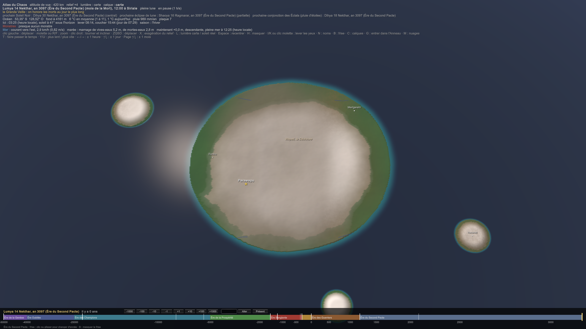

CIV-032 — Les Hejeti : la culture, et le regard des autres
Les Hejeti, « les Blancs », sont des Muntu revenus d'un plan à part. Leur nom, la ferme d'Hekaet, leur retour vers 1900, l'Ouvreur et le plan : CIV-008 Les Hejeti.
- Leur terre : leur arrivée a déformé l'espace et le Chaos sur leur terre, qui subit un dérèglement du Chaos plus grand qu'ailleurs.
- Le déguisement : ils le maîtrisent, et se sont infiltrés dans plusieurs couches de la société, surtout à Sera.
- Le soleil : presque partout, ils doivent se couvrir tout le corps pour sortir au soleil.
- Le but : le chaos, la destruction, et la libération de la Mère pour détruire les dieux. Pour eux, les dieux sont une abomination.
- Le regard des autres : comme les albinos, ils sont mis à part par racisme et discrimination. Les Muntu méprisent profondément ce qui a l'air différent d'eux : les Hejeti, et les Lumas qu'ils veulent coloniser.
1. Leur terre : Iwiheji et la Déchirure
- L'archipel s'appelle Iwiheji, « les îles blanches ». Il est froid et brumeux, vers 52°S, et couvre ≈ 50 000 km² pour ≈ 800 000 âmes. Il est au milieu de nulle part : au cœur du Grand Océan, loin de toutes les autres terres. Aucune route de mer n'y passe, et personne n'y va par hasard.
- Le sol : Iwiheji est un plateau volcanique éteint, posé sur le fond du Grand Océan. Ses îles sont basses (≈ 500 m en moyenne, ≈ 900 m au plus haut), râpées par les glaciers et battues par les vents d'ouest. Il y fait ≈ 4 °C en moyenne, avec ≈ 1 000 mm de pluie et de neige par an.
Les îles Kerguelen, vers 49°S dans l'océan Indien, sont les restes d'un grand plateau volcanique né d'un point chaud. Sans arbres, couvertes de landes et de glaciers, elles ont une moyenne annuelle d'environ 5 °C et des vents d'ouest presque permanents.
- La Déchirure, Wepeti (« l'ouverture »), est l'endroit où l'Ouvreur a percé leur plan, vers 1900. La plaie ne s'est jamais refermée. Le plan du dieu des Dimensions y touche encore le monde, et l'espace y reste plié.
- Ce que ça fait au Chaos (sur l'échelle de COS-002 Échelle de concentration) :
- autour de la Déchirure, le sol atteint N ≈ +6 à +7. C'est le seuil des anomalies physiques : la gravité varie d'une colline à l'autre, la lumière dévie, les distances mentent ;
- sur le reste de l'archipel, il reste à N ≈ +4 à +5 : la météo est déréglée, la faune mute, et des monstres naissent, surtout des Anomalies (MON-010 Anomalies).
- Ce que ça leur apporte :
- une forteresse invisible. Les cartes d'Iwiheji sont fausses, parce que l'espace y est faux. Les brumes tournent en rond, et les navires étrangers perdent leur cap et ne reviennent pas. Seul un Hejeti, qui sent les plis de l'espace, sait y entrer. C'est pour ça que personne ne les a trouvés en douze siècles ;
- une sortie plus rapide. Ils trouvent les passages : certains plis de la Déchirure mènent plus loin qu'ils ne devraient, et c'est l'amorce de leur « troisième porte ».
- Ce que ça leur coûte : vivre dans un Chaos à +4 accélère la dérive. Les Hejeti doivent se purifier chaque jour, et ceux qui ne le font pas deviennent les monstres de leur propre archipel.
Le Pas et le Passage : se téléporter, à grand prix
Les Hejeti maîtrisent l'espace, et ils peuvent donc se téléporter, dans une certaine mesure, de façon très contraignante. Il y a deux manières de le faire.
- Le Pas : un saut court, à vue, en pliant l'espace soi-même.
- Le prix : ≈ 1 chaon par kilo et par kilomètre. Un homme de 70 kg qui saute de 100 m paie ≈ 7 chaons. Sauter d'un kilomètre coûte ≈ 70 chaons, toute une âme ordinaire.
- Qui le peut : seuls ceux qui ont l'âme d'un mage. Même un weru ne saute pas plus de quelques dizaines de kilomètres par jour.
- C'est l'arme de l'infiltré : passer un mur, sortir d'une cellule, disparaître d'une ruelle.
- Le Passage : un trajet long, presque gratuit, par un pli qui existe déjà.
- Ces plis sont rares : les restes du dieu des Dimensions dans l'Anneau et dans Muisifeti, les plis de la Déchirure, quelques endroits du monde où l'espace est resté tordu.
- Les règles : il faut être au pli pour le prendre, et connaître l'autre bout, ce qui veut dire y être déjà allé. On n'arrive que là où le pli débouche.
- Le réseau : les Hejeti connaissent une poignée de Passages entre Iwiheji et le reste du monde, et c'est leur secret le mieux gardé. C'est ainsi qu'un peuple au milieu de nulle part s'est infiltré partout.
- Les contraintes, pour les deux :
- le fer : il boit le Chaos libre, et donc le pli. Un Hejeti qui porte du fer ne saute pas, et une cellule de fer les tient ;
- la purification : il faut être purifié avant de sauter, sinon l'âme se déchire en route ;
- la charge : on ne prend avec soi que ce qu'on porte ;
- le corps : on arrive vidé, désorienté, et chaque saut fait dériver un peu plus.
2. Le corps et le soleil
- Le corps (CIV-008 Les Hejeti) : la peau très pâle et les yeux clairs. Le soleil les brûle en quelques minutes. Ils utilisent le Chaos sans la Foi, de naissance, et ont l'affinité de l'espace.
- Sur Iwiheji, sous la brume et vers 52°S, ils peuvent vivre à découvert, même le jour. Sur presque toutes les autres terres du monde, ils doivent se couvrir tout le corps : d'où leurs voiles, leurs gants, leurs masques et leurs fards, et un art du déguisement né d'abord de la nécessité.
- Pas de magie dans le déguisement, d'abord. Avant de plier la lumière, ce que seuls quelques-uns savent faire, un Hejeti apprend :
- les fards : une pâte d'ocre et de beurre de karité qui donne le bronze d'un Muntu et protège du soleil ;
- les accents des sept royaumes ;
- les gestes d'un métier ;
- la patience : un infiltré peut rester trente ans dans une cour.
- Le nom caché, et c'est leur arme la plus dangereuse. Un serment prêté sous un faux nom ne vaut rien et ne tue pas (CIV-012 Le pouvoir et la loi). Dans un monde où le parjure tue, un Hejeti infiltré peut jurer n'importe quoi sous son nom d'emprunt. Trois choses peuvent le trahir :
- les Balances des temples, dont l'aiguille ne bouge pas quand le nom est faux (CIV-012 Le pouvoir et la loi). Les infiltrés évitent tous les procès ;
- les lecteurs de Naora, qui lisent l'âme et voient le Chaos qui n'a pas de dieu (CIV-031 Naora). Les chamans de Naora sont l'ennemi que les Hejeti craignent le plus ;
- les Masques vivants d'Arhamya, qui montrent l'émotion réelle (CIV-028 Vesha).
3. La culture
Trois choses tiennent la vie d'Iwiheji : la Mémoire, la Purification et la Nuit.
- La Mémoire.
- La Récitation : à 7 ans, quand les autres Muntu passent la Pesée, chaque enfant hejeti apprend le Récit de la Ferme de la bouche d'un ancien des lignées. Il apprend ce qu'Hekaet a fait, génération par génération, sans rien adoucir.
- Le récit est oral, jamais écrit, parce qu'un écrit se trouve.
- « Nous nous souvenons pour qu'ils ne recommencent pas. »
- La Purification. Chaque jour, à l'aube, avant de dormir (ils vivent la nuit), un Hejeti se purifie : il calme le Chaos qu'il a pompé dans la nuit. C'est leur prière, sans dieu. Celui qui saute la Purification trois jours de suite est surveillé par les siens, et enfermé au septième. Chez eux, chaque famille a quelqu'un qui a dérivé.
- La Nuit. On vit après le coucher du soleil : les marchés, les repas, les fêtes, les écoles. La lumière est celle de la lune, des feux et de la Déchirure, qui luit faiblement.
- Le Premier Voile. À l'âge adulte, le jeune Hejeti reçoit son premier voile de jour, celui qui le protège hors d'Iwiheji, et son nom caché. Il ne le dira qu'aux siens. Il prête alors son premier serment, sous son vrai nom, et devient adulte s'il prend (CIV-016).
- L'esthétique : le blanc, l'argent et le gris de la brume, l'inverse de tous les royaumes de Sera. Ils ont choisi le nom « les Blancs » : ce que la ferme a fait d'eux est devenu leur drapeau.
- La langue : un Logar « à l'ancienne », chargé d'Auréen, la langue de leur dieu mort, et une langue de gestes pour se reconnaître entre infiltrés sans un mot. Elle est faite de petits signes de la main, comme on en voit chez les sourds et chez les guildes de Siriale.
- Les fêtes :
- la Nuit de l'Ouverture, chaque année, pour le jour où l'Ouvreur a percé leur plan. C'est leur fête nationale ;
- la Veillée des Effacés, pour les générations mortes dans la ferme, dont personne n'a gardé les noms (Hekaet les a emportés).
4. La foi sans dieu : « les dieux sont une abomination »
- Leur doctrine :
- la Mère, le Chaos primordial (Nuni), est l'origine de tout ;
- les dieux sont des tumeurs de la Mère : du Chaos qui s'est condensé, puis s'est mis à élever les mortels comme du bétail (la ferme de la Foi, DIV-001 Économie de la Foi) ;
- la Restriction est la cage, le sceau la serrure, et Hekaet la preuve.
- Ils ne prient pas la Mère. Ils veulent la libérer, pas la servir. Pour eux, prier, c'est déjà être dans la ferme.
- C'est la différence avec Khal'daras : Khal'daras pactise avec des dieux déviants (CIV-030 Khal'daras) ; les Hejeti veulent qu'il n'y ait plus de dieux du tout.
5. Le regard des autres : une haine systémique
L'albinisme est un défaut héréditaire du pigment de la peau, des cheveux et des yeux. Il touche une naissance sur 20 000 en Europe, mais environ une sur 1 400 en Tanzanie. Dans plusieurs pays d'Afrique de l'Est, les personnes albinos sont victimes de discrimination, et depuis les années 2000 d'agressions et de meurtres liés à des croyances de sorcellerie. L'ONU a créé en 2015 un poste d'expert indépendant pour les protéger.
- Les Muntu albinos. L'albinisme existe aussi chez les Muntu de Sera : une naissance sur 4 000, soit ≈ 35 000 albinos dans les sept royaumes.
- La haine des pâles est plus vieille que les Hejeti. C'est une haine systémique, et elle touche tous les albinos. Les Hejeti n'en sont qu'une partie. Elle est faite de choses ordinaires plus que de violence :
- le corps : chez les Muntu, le bronze est la peau saine, et le pâle est celle d'un malade, de quelqu'un que le soleil brûle et qui ne peut pas travailler aux champs ;
- la religion : les temples disent le pâle « touché par le Chaos » ;
- la vie : on ne les embauche pas, on ne les épouse pas, les guérisseurs les soignent en dernier, et les enfants pâles sont abandonnés.
- Les Hejeti ont ajouté le soupçon à la haine. Depuis qu'on sait qu'ils s'infiltrent, tout pâle est aussi un espion possible. Mais un vrai Hejeti se farde et passe pour un Muntu, tandis qu'un albinos ne peut pas cacher sa peau. La haine tombe d'abord sur ceux qui n'ont rien fait.
> [!science] Le colorisme
> Le rejet d'une couleur de peau, y compris à l'intérieur d'un même peuple, existe sur tous les continents. Il touche les Noirs en Europe ; en Inde, la préférence pour la peau claire pèse sur le mariage et l'embauche ; en Afrique de l'Est et centrale, les albinos sont rejetés. Ce sont des haines systémiques : elles passent par l'école, le travail, le mariage et les institutions, autant que par la violence. - Les enfants des lignées dormantes : quand le sang hejeti ressort dans une famille de Sera, un enfant naît trop pâle. Selon le royaume, on le cache, on l'exile ou on le tue.
- Chaque royaume a sa manière :
| Royaume | Ce qu'on fait des pâles |
|---|---|
| Arhamya | ils sont maudits, comme les hétérochromes (CIV-026 Arhamya). Le Ministère des Murmures les traque, et un enfant pâle est souvent « rendu à la déesse » |
| Kemazo | ils sont faibles : le soleil les brûle, ils ne passent pas le rite du Sang et du Tambour. On les écarte de l'armée, donc de tout |
| Vesha | ils se vendent. Les Sakaranahi vendent les captifs pâles comme curiosités, et les maisons des Neferu en font un luxe (CIV-028 Vesha) |
| Siriale | on s'en méfie, mais on les embauche, pour le travail de nuit des forges. C'est la ville où un pâle peut vivre |
| Naora | on les lit. Un chaman sait tout de suite si l'âme est hejeti ou non. C'est le seul royaume où un albinos innocent est toujours innocenté |
| Zun'khel et Khal'daras | à Zun'khel, la rune de la ligne décide ; à Khal'daras, personne ne demande d'où vient qui que ce soit | - Le mot. « Blanc » était l'insulte de Sera bien avant le retour des Hejeti, et c'est le nom qu'ils se sont choisi. Ils ont pris l'insulte pour drapeau.
- Ce que les Hejeti en font. La haine contre eux les sert : les chasses aux pâles et les pogroms font des morts, et des morts dans le Chaos nourrissent la Mère. Ils n'empêchent pas les persécutions, ils les guettent. C'est le plus sombre de leur plan, et ce qui les rend impardonnables même pour ceux qui les comprennent.
- Le miroir avec les Lumas. Les Muntu méprisent les Hejeti parce qu'ils sont trop pâles. Ils méprisent les Lumas parce qu'ils sont trop bêtes, à leurs yeux, et c'est ce qui justifiera la colonisation de Khodom (CIV-023 Les peuples hors de Sera). C'est le même regard.
6. Les forces
- Ils sont peu nombreux (≈ 800 000), mais ils absorbent tous le Chaos de naissance. Un Hejeti sur 250 atteint 50 sur la Balance, soit dix fois plus que chez les autres Muntu (SIM-11 La distribution de la puissance). Cela fait ≈ 3 200 « mages » pour un petit peuple, et deux ou trois weru.
- Ils n'ont pas d'armée. Ils ont des infiltrés, dans les cours, les guildes, les temples, les banques de Vesha et la Taverne. Ils ont aussi les Plis, ceux qui plient la lumière : quelques dizaines.
- Leur guerre consiste à faire faire la guerre aux autres : pousser une cour à une grande chasse, ou une armée à se battre dans un territoire.
7. Les lieux d'Iwiheji

L'archipel est vers 52°S, à 130°O, au cœur du Grand Océan. Il se compose d'une grande île d'environ 240 km sur 200, qui monte à ≈ 900 m, et de trois îlots. C'est de la toundra froide, entre 2 et 6 °C de moyenne et autour de 1 000 mm de pluie : un pays de brume, comme les îles Kerguelen.
Les noms sont en Logar ancien : Iwiheji vient de iw « île » et hedj « blanc ».
| Lieu | Sens | Ce que c'est | Où |
|---|---|---|---|
| Wepeti, la Déchirure | « l'ouverture » | là où l'Ouvreur a percé le plan | au centre de la grande île, sur les hauteurs |
| Perewepu (capitale) | « la maison de celui qui ouvre » | le siège de la lignée de l'Ouvreur, qui garde la Déchirure | à 60 km au sud-ouest de Wepeti |
| Merigerehi | « le quai de la nuit » | le port de pêche ; on y vit après le coucher du soleil | la côte nord-est |
| Renibu | « sans nom » | la Veillée des Effacés, pour les générations mortes dans la ferme dont personne n'a gardé les noms | la côte ouest |
| Henereti | « l'enclos » | on y enferme ceux qui ont sauté la Purification sept jours. Il est sur un îlot, loin de la Déchirure, là où le Chaos est le plus calme : on y soigne la dérive en éloignant le malade de ce qui la nourrit | un îlot au sud-est |
Les Passages ne sont sur aucune carte : c'est leur secret le mieux gardé (§ 1).
Liens
CIV-008 Les Hejeti · CIV-023 Les peuples hors de Sera · CIV-024 Les sept royaumes en 3097 · CIV-012 Le pouvoir et la loi · CIV-031 Naora · COS-002 Échelle de concentration · MON-010 Anomalies · DIV-001 Économie de la Foi · BIO-005 Les races, biologie et apparence